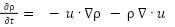

2D Smoke Simulation
Benjamin Feinberg, Tarek Soufi, Rahul Sudharsan, Kasra Beheshti
Summary
For this project, we implemented 2D smoke simulation based on the suggested Navier-Stokes equation using Three.js and WebGL. We chose a web-based format to make distribution and presentation easier and allow us to focus more on the implementation of the shaders rather than the complexities of the underlying framework. We implemented settings to enable/disable shaders and show different slabs depending on the user’s preference as well as smoke properties such as viscosity, velocity, and vorticity are modifiable to simulate different environments.
Our simulation can be found on a github pages site here.
Theory
The Navier-Stokes equation can be described as such:
Where vector u is the velocity field, P is pressure, v is viscosity, and ρ is the fluid density.
In our case, due to other conditions that need to be taken into account, such as external forces and boundary conditions, the Navier-Stokes equation is a baseline we have expanded upon to best simulate fluid in a bounded environment.
Three.JS
We decided to build our underlying framework using Three.JS. This was chosen as mentioned earlier due to the lower barrier-of-entry and the ability to test seamlessly from any OS platform. Although Three.JS is for 3D graphics, we have used a fixed orthographic camera to simulate a 2D plane for our smoke simulation. Our shaders are written in GLSL and loaded using an asynchronous shader loading operation in our framework that allows us to scale as necessary to include any new shaders with minimal changes to the framework.
Operations performed by the fragment shader are rendered onto a WebGLRenderTarget which is then displayed to the scene. In WebGL, because a texture must either be a data source or rendering target, we cannot read/write to just one texture simultaneously. Therefore, for fluid properties we have chosen to simulate such as velocity, we have two textures, one for modifying and one for rendering changes. Once this operation is performed, the textures are swapped so the data used for the latest animation frame is now the source of the next operation. This process represents a “slab operation,” which Nvidia describes as the processing of all shader fragments on a frame buffer and the texture post-op process that involves the swapping operation. The “slab” itself can be thought of as the 2D plane (or buffer) that represents the fluid property we are simulating. Each fluid property is a separate slab.
Problems Encountered
We encountered quite a few problems during our initial setup phase. Initially, there was a sort of fundamental roadblock in bridging the gap between how the shaders worked in tandem with the buffers in Three.JS after the shaders were loaded. At times, certain coefficients we selected for different operations like diffusion or density caused weird paint-like effects that went contrary to our intended final result. Some of these can still be simulated by playing around with the settings and setting them to something wildly unrealistic. Once we further detailed how we want our scalability to work, we applied various framework fixes that made adding future shaders seamless and non-conflicting with calculations made by previous iterations of the animation loop.
Shaders
Not all of these ended up being an individual shader, some were combined into one to make the math calculations more streamlined versus broken up.
We first solved the mass conservation equation to update the density stored in the z coordinate of the velocity field using this equation:

We then compute velocity which is computed by summing the changes in velocity caused by viscous diffusion, an external force caused by mouse drags, and a corrective pressure field term to preserve null divergence.
Viscous diffusion is computed by taking the Laplacian of the velocity and scaling with viscosity threshold.
The external force is given from the distance from the texel coordinate to the mouse scaling the drag direction vector.
Pressure can be computed by scaling the density gradient.
We can then take the curl of the texel’s velocity to get vorticity which adds small-scale detail to the fluid and normalize this value by the vorticity threshold parameter and add this to the fluid velocity.
External boundary conditions:
To handle smoke hitting the boundaries of the box, during each animation step, the velocity of the particle in question was clamped in such a way that if the updated texture data would exceed the boundary cells making up the border, it would instead be reset to the boundary line and its velocity would be negated to simulate a collision.
Advection
To handle the dissipation of the texel information, we implemented the semi-lagrangian scheme which is cost-effective for the GPU to compute. Given the transport equation (modified for velocity):
We can solve for u at the current texel’s position x using the formula:
This formula takes the trajectory imputed from the current texture data to determine the state at the previous timestep and then calculate advection at the next timestep.
External Forces
External forces in this context are defined as forces simulated using the trajectory of the mouse input. In this case, a constant velocity was applied in the trajectory the mouse was traveling along to simulate smoke blowing out in that direction.
Video
References
https://cs184.eecs.berkeley.edu/sp23/lecture/20/fluid-simulation
http://graphics.cs.cmu.edu/nsp/course/15-464/Fall09/papers/StamFluidforGames.pdf
https://gamedevelopment.tutsplus.com/tutorials/how-to-write-a-smoke-shader--cms-25587
https://maths.ucd.ie/~plynch/LECTURE-NOTES/NWP-2004/NWP-CH03-2-6.pdf
https://inria.hal.science/inria-00596050/document
Contributions
Benjamin: Underlying Three.JS framework & asynchronous shader loading, frame buffer, shader debugging, GUI menu;
Rahul: Fluid simulation shaders (advection, vorticity, density, etc), changes to velocity decay;
Tarek: All the weird things, Bloom shader(hookah_lounge), & milestone/final videos, final powerpoint slides and quirky design;
Kasra: Framework for smoke visualization & velocity operations, additions to GUI menu, user input, milestone report, final report;